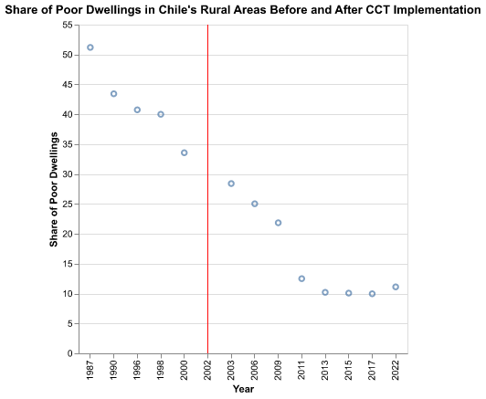

PPHA:30538 Final Project Writeup
Motivation
Since the 1990s, Conditional Cash Transfers (CCTs) have been a key anti-poverty program in Latin America and other developing regions. These programs provide income subsidies to poor families, tied to their children’s school enrollment. While their success in boosting enrollment and reducing poverty is well-documented, less research explores their differing impacts on urban and rural areas. CCTs address income-driven school withdrawals, common in both settings. However, they may not solve low enrollment caused by limited school access, a problem more frequent in rural areas with poor infrastructure.
Motivated by such discrepancies, this research project aims to understand whether there is evidence of differential long-term impacts of CCTs in education and quality of life outcomes in rural and urban areas.
Data Source and Approach
This project used data compiled by the Center for Distributive, Labor and Social Studies (CEDLAS), from the National University of La Plata in Argentina, in partnership with the World Bank. We retrieved datasets about education, infrastrcutre, and housing, publicly available on their website.
The cleaning process for the (education and infrastructure data) selected information depending on the survey methodologies for each country. Then, for the analysis, we narrowed the datasets to include only the target countries and variables of interest. Brazil, Chile, Mexico, Paraguay, and Peru were chosen because they had both (a) implemented a CCT program and (b) available rural and urban disaggregated data. Variables were refined to focus only on relevant outcomes. We considered years of education to gauge urban and rural disparities broadly. However, we focused on school enrollment for 6- to 12-year-olds and 13- to 17-year-olds to better capture immediate impacts of CCTs.
To explore outcomes beyond education, we examined changes to the quality of life before and after CCT implementation. Because health, mental health and labor force participation have been widely studied, we opted to delve into the quality of dwellings. This addresses a gap in the literature and considers that dwelling quality is less influenced by systemic differences across countries. While health outcomes will vary according to a country’s public health and healthcare strucutre, a safe, well-built house is likely to be consistent across all countires. Furthermore, home improvement is an area where individuals have significant autonomy and often allocate surplus income.
After cleaning and merging the data, we created clear and informative plots to visualize the data effectively. We then conducted simple regressions, correlation analyses, and t-tests to determine whether the observed differences in the data were statistically significant.
Given time limitations, the project did not aim to establish causal relationships. All findings are based on descriptive and correlational analyses, without robustness checks for causality. Nevertheless, the insights gathered provide valuable descriptive information that can inform future policy.
Findings
The main finding is that rural areas lead the increase in school enrollment associated with the implementation of CCT programs. The average percentage-point increase in rural school enrollment in the periods after the implementation of a CCT program relative to periods before exceeds that of urban areas across all countries.
Such improvements are particularly meaningful for the 13- to 17-year-old group, suggesting that CCTs played a key role in keeping teenagers in school. This indicates that the subsidies likely offset or outweigh the immediate income benefits of enterging the workforce before school completion. Furthermore, these improvements highlight that interruptions in education are primarily driven by the need to supplement family income.
We also explored how higher enrollment rates could translate into better homes. Running a simple correlation, we found that in Brazil, Chile, and Mexico, years of education and dwelling quality are highly inversely correlated, with coefficients exceeding 0.9. In Paraguay, the correlation is initially low, but after dropping two outliers, the same linear relationship holds. Peru is the only country where these two measures appear to be uncorrelated. These findings therefore suggest that CCT programs indirectly and negatively might affect the share of rural populations living in poor dwellings.
This intuition is confirmed by visualizing how the share of poor dwellings decreases after the implementation of CCT programs in each of those 4 countries, even when effects are not immediate. A more sophisticated identification strategy, such as a differences in differences design, is needed to explore causality without confounding factors. Still, these preliminary graphs are an optimistic start for future research on the topic.

For additional plots and comparisons, a Shiny dashboard allows the user to allows explore trends for the outcomes preivously mentioned across the five different countries analyzed.
Policy Implications
Unlike our initial expectation, CCTs played a key role in increasing enrollment rates, especially in rural areas. The long-term benefits go beyond educational and financial gains, and could also possibly extend to housing quality, although further research is needed in this respect.
Despite remaining disparities indicating a need for targeted infrastrcure and education policies to better serve rural populations, these findings reinforce the success of CCT programs as a transformative force in breaking the cycle of poverty across both urban and rural landscapes.